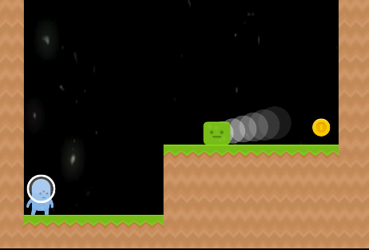
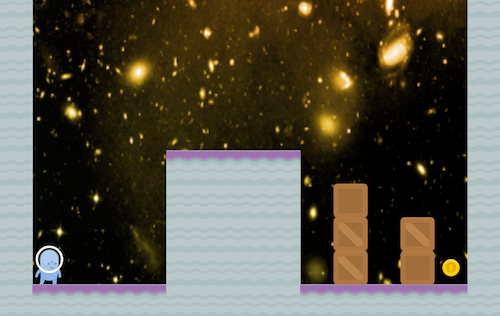
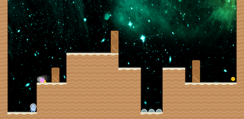

Procgen¶
Overview¶
Procgen Benchmark is a set of randomly generated environments released by OpenAI using 16 exploits (CoinRun, StarPilot, CaveFlyer, Dodgeball, FruitBot, Chaser , Miner, Jumper, Leaper, Maze, BigFish, Heist, Climber, Plunder, Ninja and BossFight), the full name of procgen is Procedural Generation, which means procedural generation. For the procgen environment, it can generate games of the same difficulty but using different maps, or games using the same map but different difficulties, which can be used to measure the speed at which the model learns general skills, thereby judging the generalization ability of the algorithm to the environment. The image below shows the Coinrun game in it.

The following three pictures represent the different inputs from level1 to level3 in the coinrun environment:
  Install¶
Installation Method¶
It can be installed by one-click pip or combined with DI-engine. It only needs to install two libraries, gym and gym[procgen].
# Method1: Install Directly
pip install gym
pip install gym[procgen]
# Method2: Install with DI-engine requirements
cd DI-engine
pip install ".[procgen_env]"
Verify Installation¶
After the installation is complete, you can verify that the installation was successful by running the following command on the Python command line:
import gym
env = gym.make('procgen:procgen-maze-v0', start_level=0, num_levels=1)
# num_levels=0 - The number of unique levels that can be generated. Set to 0 to use unlimited levels.
# start_level=0 - The lowest seed that will be used to generated levels. 'start_level' and 'num_levels' fully specify the set of possible levels.
obs = env.reset()
print(obs.shape) # (64, 64, 3)
Space Before Transformation (Original Environment)¶
Observation Space¶
The actual game screen, RGB three-channel image, the specific size is
(64, 3, 3), the data type isfloat32
Action Space¶
The game operation button space, generally a discrete action space of size N (N varies with the specific sub-environment), the data type is
int, you need to pass in python values (or 0-dimensional np arrays, such as actions 3 isnp.array(3))For example, in the Coinrun environment, the size of N is 5, that is, the action takes a value from 0 to 4. The specific meaning is:
0：NOOP
1：LEFT
2：RIGHT
3：UP
4：DOWN
Reward Space¶
The game score will vary according to the specific game content. Generally, it is a
floatvalue. For example, in the Coinrun environment, if you eat coins, you will be rewarded 10.0 points, and there are no other rewards.
Other¶
The end of the game is the end of the current environment episode. For example, in coinrun, if the agent eats coins or the game time exceeds the maximum allowed game time, the game ends.
Key Facts¶
1. 2D
RGB three-channel image input, three-dimensional np array, size (3, 64, 64) , data type np.float32 , value [0, 255]
Discrete action space
Rewards are sparse. For example, in coinrun, you can only get points if you eat coins.
The generalization of the environment. For the same environment, there are different levels. Their input, reward space, and action space are the same, but the difficulty of the game is different.
Transformed Space (RL Environment)¶
Observation Space¶
Transform content: resize from
(64,64,3)to(3, 64, 64)Transformation result: 3D np array with size
(3, 84, 84), data typenp.float32, value[0, 255]
Action Space¶
Basically no transformation, it is still a discrete action space of size N, but generally a one-dimensional np array, the size is
(1, ), the data type isnp.int64
Reward Space¶
Basically no transformation
The above space can be expressed as:
import gym
obs_space = gym.spaces.Box(low=0, high=255, shape=(3, 64, 64), dtype=np.float32)
act_space = gym.spaces.Discrete(5)
rew_space = gym.spaces.Box(low=0, high=10, shape=(1, ), dtype=np.float32)
Other¶
inforeturned by the method stepmust containfinal_eval_rewardkey - value pair, representing the evaluation metrics of the entire episode, and the cumulative sum of the rewards for the entire episode in Procgen
Other¶
Lazy Initialization¶
In order to support parallel operations such as environment vectorization, environment instances generally implement lazy initialization, that is, the __init__ method does not initialize the real original environment instance, but only sets relevant parameters and configuration values. In the first callreset method initializes the concrete original environment instance.
Random Seed¶
There are two parts of the random seed in the environment that need to be set, one is the random seed of the original environment, and the other is the random seed of the random library used by various environment transformations (such as
random，np.random)For the environment caller, just set these two seeds through the
seedmethod of the environment, no need to care about the specific implementation detailsConcrete implementation inside the environment: For the seed of the original environment, set before calling the
resetmethod of the environment, the concrete original environmentresetConcrete implementation inside the environment: For random library seeds, the value is set directly in the
seedmethod of the environment
The Difference between Training and Testing Environments¶
The training environment uses a dynamic random seed, that is, the random seed of each episode is different, and is generated by a random number generator, but the seed of this random number generator is fixed by the
seedmethod of the environment ;The test environment uses a static random seed, that is, the random seed of each episode is the same, specified by theseedmethod.
Store Video¶
After the environment is created, but before reset, call the enable_save_replay method, specifying the path to save the game replay. The environment will automatically save the local video files after each episode ends. (The default call gym.wrappers.RecordVideo implementation ), the code shown below will run an environment episode and save the result of this episode in a folder./video/:
from easydict import EasyDict
from dizoo.procgen.coinrun.envs import CoinRunEnv
env = CoinRunEnv(EasyDict({'env_id': 'procgen:procgen-coinrun-v0'}))
env.enable_save_replay(replay_path='./video')
obs = env.reset()
while True:
action = env.random_action()
timestep = env.step(action)
if timestep.done:
print('Episode is over, final eval reward is: {}'.format(timestep.info['final_eval_reward']))
break
DI-zoo Runnable Code Example¶
The full training configuration file is at github
link
Inside, for specific configuration files, such as coinrun_dqn_config.py , use the following demo to run:
from easydict import EasyDict
coinrun_dqn_default_config = dict(
env=dict(
collector_env_num=4,
evaluator_env_num=4,
n_evaluator_episode=4,
stop_value=10,
),
policy=dict(
cuda=False,
model=dict(
obs_shape=[3, 64, 64],
action_shape=5,
encoder_hidden_size_list=[128, 128, 512],
dueling=False,
),
discount_factor=0.99,
learn=dict(
update_per_collect=20,
batch_size=32,
learning_rate=0.0005,
target_update_freq=500,
),
collect=dict(n_sample=100, ),
eval=dict(evaluator=dict(eval_freq=5000, )),
other=dict(
eps=dict(
type='exp',
start=1.,
end=0.05,
decay=250000,
),
replay_buffer=dict(replay_buffer_size=100000, ),
),
),
)
coinrun_dqn_default_config = EasyDict(coinrun_dqn_default_config)
main_config = coinrun_dqn_default_config
coinrun_dqn_create_config = dict(
env=dict(
type='coinrun',
import_names=['dizoo.procgen.coinrun.envs.coinrun_env'],
),
env_manager=dict(type='subprocess', ),
policy=dict(type='dqn'),
)
coinrun_dqn_create_config = EasyDict(coinrun_dqn_create_config)
create_config = coinrun_dqn_create_config
if __name__ == '__main__':
from ding.entry import serial_pipeline
serial_pipeline((main_config, create_config), seed=0)
Benchmark Algorithm Performance¶
Coinrun（Average reward equal to 10 is considered a better Agent）
Coinrun + DQN

Maze（Average reward equal to 10 is considered a better Agent）
Maze + DQN